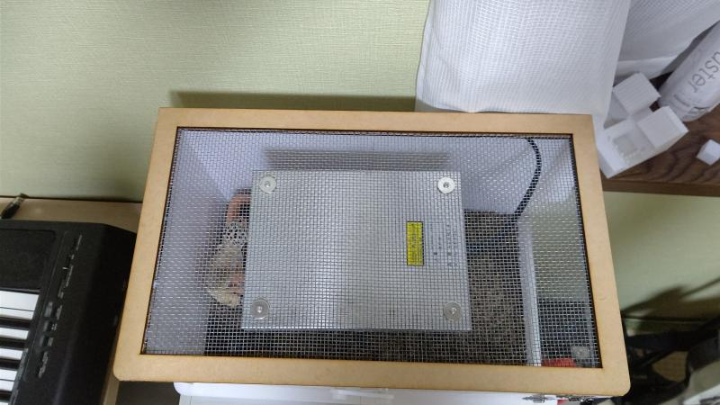
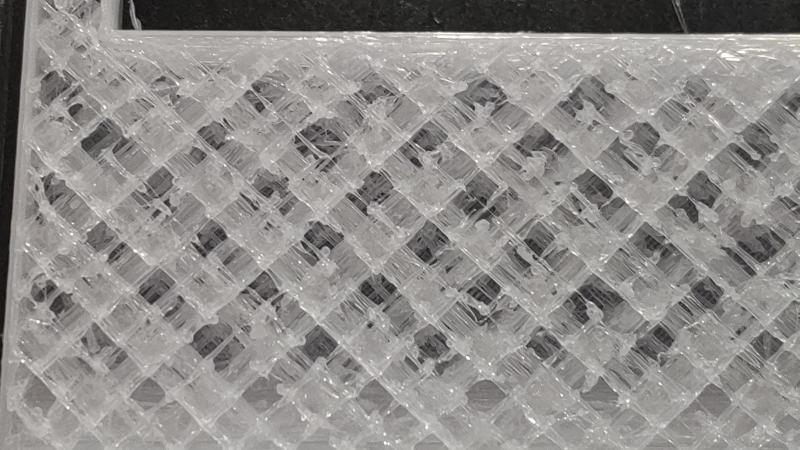

最終課題
世話がしやすい飼育ケージ
目次
制作目的
今までのケージに色々な不便な点があった。- 高さが高く暖房器具の効果が低め
- 世話が上からしかできない
- 餌を食べているところを見る際に手が辛い
- 掃除がしにくい
- 暖房器具を固定している金網がそのままのため服に引っかかる
- 暖房器具のコードが扱いにくい
完成品
観音開きで正面から無理のない状態で世話ができる。
高さを抑え、暖房器具の効果上昇
背面にコードを通す穴をつけて配線に困らない

暖房器具を固定している金網に木枠をつけ、服の引っ掛かり防止
制作過程
1 本体
ケージの大部分はL-DEVOを用いた。ヒーターに常に温められるため素材はPET-Gを用いた。
また、インフィルパターンは断熱効果が期待できるようオクテットを用いた。

プリントする際はトータルのプリント量が1kgを超えたため、2分割しプリントした。
プリント途中
結果
糸引きがひどく、隙間ができてしまった。
そのため、糸を切ったりきれいにする必要があった。
2 正面の柱
正面を観音開きにするために正面に一本横の柱が必要だった。最初は2分割せず、プリントしようとしたがノズルにフィラメントが詰まってしまったため、 こちらも2分割してプリントした。
失敗したもの
2分割でプリントしたもの

3 正面の観音開き
当初は蝶番も3Dプリントする予定だった。しかし、3Dプリントでは機能するものはサイズが大きく扱いにくかったため、市販のものを使用した。
試作品
観音開きをする際に取っ手とロックが必要のため、次の写真のようにした。
使用機材
3Dプリンター ANYCUBIC MEGA-S,L-DEVOレーザーカッター Trotec Speedy100